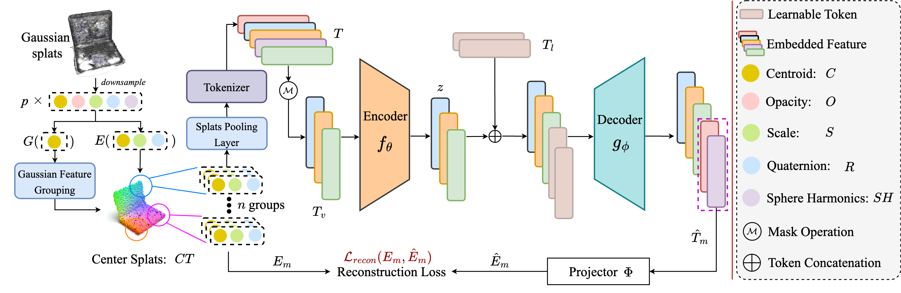

ShapeSplat: A Large-scale Dataset of Gaussian Splats and Their Self-Supervised Pretraining
*Indicates equal contribution, and ✉ indicates corresponding author.
Affiliations: 1ETH Zürich, 2INSAIT, 3University of Amsterdam, 4University of Pisa, 5University of Trento
Links:
Abstract
TL;DR: We present ShapeSplat dataset with our Gaussian-MAE method, enabling the masked pretraining directly on 3DGS parameters.
Our key contributions are as follows:
- ShapeSplat, a large-scale Gaussian splats dataset spanning 65K objects in 87 unique categories.
- Gaussian-MAE, the masked autoencoder-based self-supervised pretraining for Gaussian splats.
- We propose novel Gaussian feature grouping with splats pooling layer during the embedding stage, which are tailored to the Gaussian parameters, enabling better reconstruction and downstream task performance.
Presentation
Framework
Bibtex
@misc{ma2024shapesplat,
title={ShapeSplat: A Large-scale Dataset of Gaussian Splats and Their Self-Supervised Pretraining},
author={Qi Ma and Yue Li and Bin Ren and Nicu Sebe and Ender Konukoglu and Theo Gevers and Luc Van Gool and Danda Pani Paudel},
year={2024},
eprint={2408.10906},
archivePrefix={arXiv},
primaryClass={cs.CV},
url={https://arxiv.org/abs/2408.10906},
}